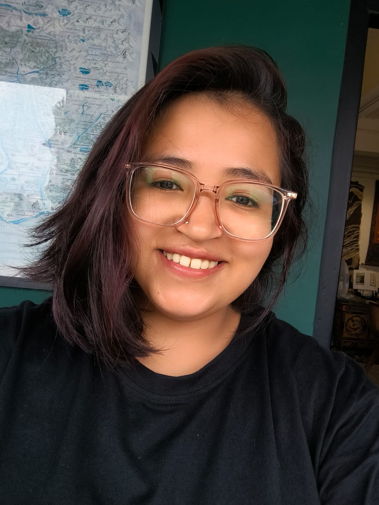

Genetics & counselling
Hereditary cancer syndromes, genetic risk assessment, pedigree analysis, and prenatal and reproductive genetics.
GENETIC COUNSELLING · RESEARCH · COMMUNICATION
BGCI Level I Certified Genetic Counselor
Connecting the science of genetics
with the people at its heart.

01 / ABOUT ME
I’m a genetic counselor with a foundation in cancer biology and a curiosity for how molecular science connects to patient care.
At Sir Thutob Namgyal Memorial (STNM) Hospital in Gangtok, I counsel patients with cancer, assess family histories and pedigrees, and contribute to hereditary risk assessment and recommendations.
My journey brings together clinical training at St. John’s Medical College Hospital, research at the Indian Institute of Science, and medical writing for patient education.
Hereditary cancer syndromes, genetic risk assessment, pedigree analysis, and prenatal and reproductive genetics.
Molecular diagnostics, genetic testing, cytogenetics, variant interpretation, and translational genetics.
Accessible medical writing with attention to the ethical and psychosocial dimensions of genetic counselling.
02 / PROFESSIONAL JOURNEY
Clinical care, communication,
and a foundation in diagnostics.
STNM Hospital · Gangtok, Sikkim
General Surgery Outpatient Department. Counselling patients with cancer, assessing family history and pedigrees, and contributing to hereditary risk assessment and recommendations.
IBD Patient Support Foundation · India
Researched and wrote patient-centered educational resources for print and social media.
Vydehi Institute of Medical Sciences and Research Centre · Bangalore
Clinical exposure under senior medical oncologists, alongside training in immunohistochemistry, PCR-based diagnostics, fluorescence in situ hybridization, and karyotyping.
Imperial Cancer Centre, Apollo Hospitals · Bangalore
Exposure to immunohistochemistry, immunocytochemistry, blood counts, blood smear and blast assessment, tumour biomarkers, and other diagnostic laboratory techniques.
03 / RESEARCH
My dissertation explored epigenetic markers in bromodeoxyuridine (BrdU)-induced cellular senescence, using young cells as controls.
The project investigated acetylation and methylation markers through antibody staining for activating and repressing marks.
04 / EDUCATION & RECOGNITION
FEB — APR 2025
St. John’s Medical College Hospital, Bangalore
Course guide: Dr Veronica Preetha Tilak
2020 — 2024
Jain (Deemed-to-be) University
School of Allied Healthcare and Sciences
Chief Minister Education Assistance Scholarship for BSc Cancer Biology.
2nd place, National Science Day Poster Presentation, 2023.
Executive Officer, Voluntary Blood Donors Association, Sikkim (East District).
Recognised as an Active Working Member during COVID-19, 2020.
05 / BEYOND WORK
06 / LET’S CONNECT
For professional opportunities, research collaborations,
or patient education projects, get in touch.